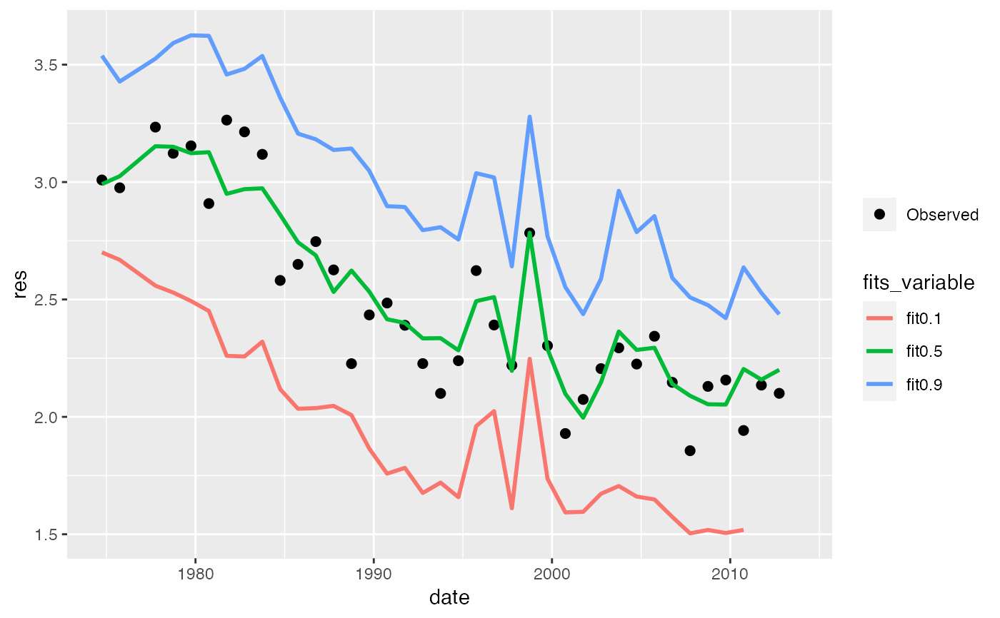
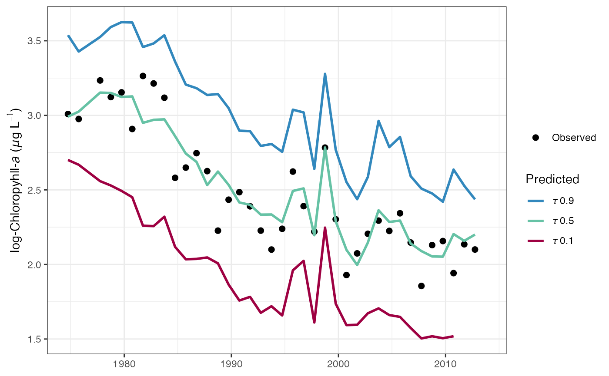
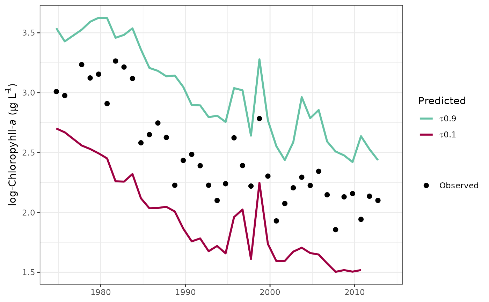
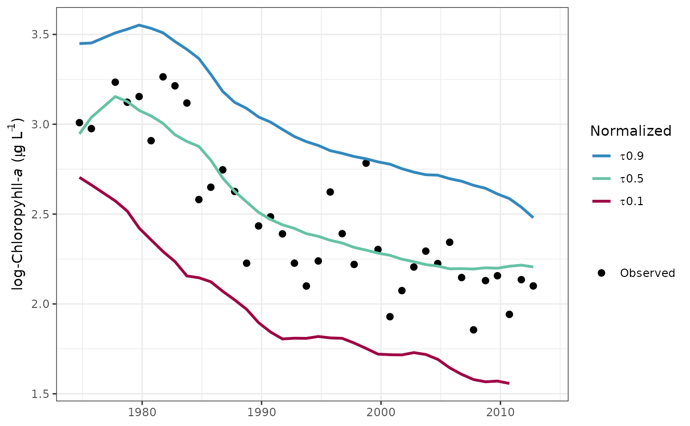
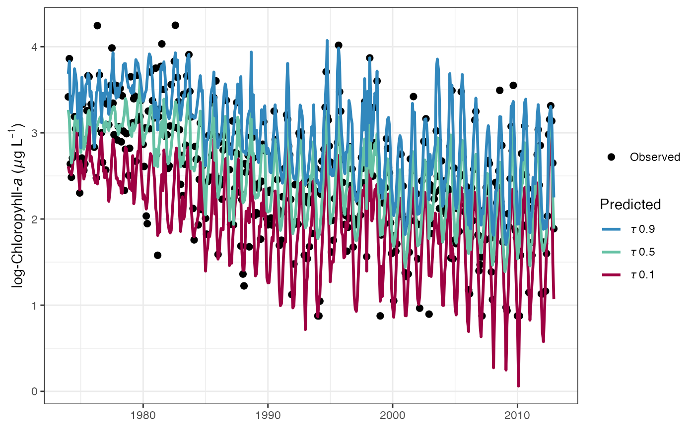
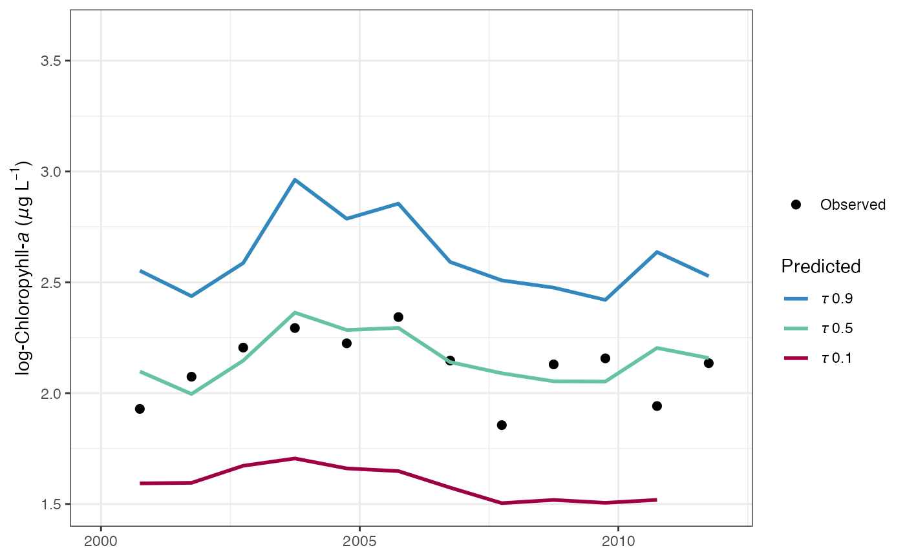
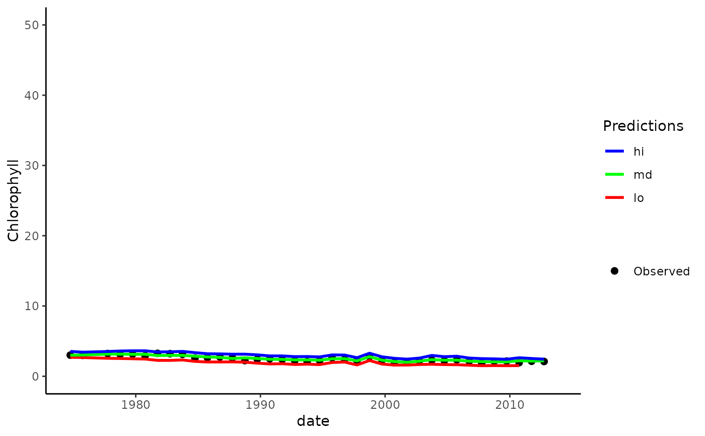
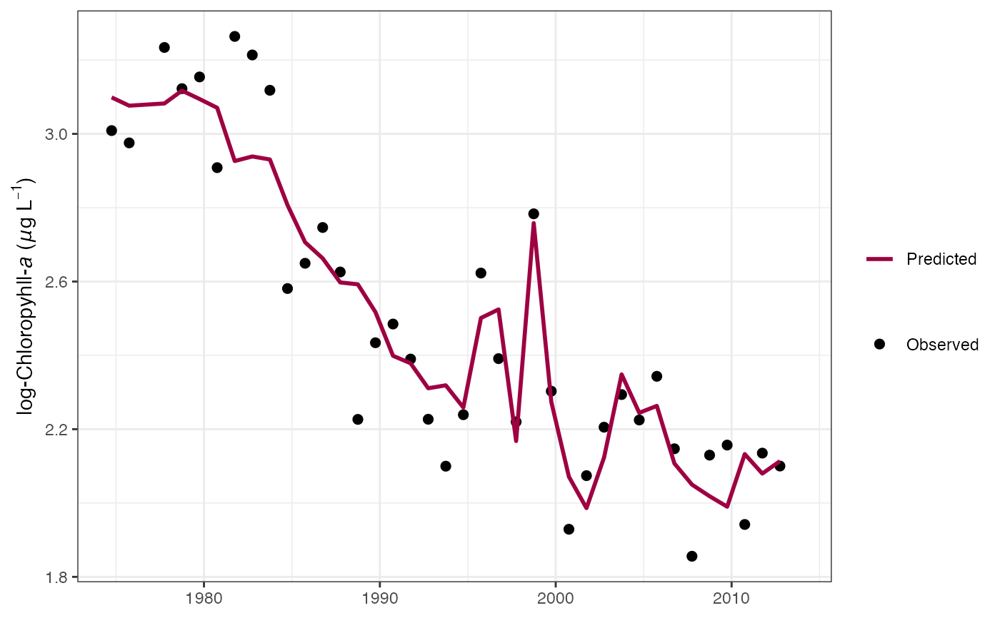

Plot a tidal object to view response variable observations, predictions, and normalized results.
fitplot(dat_in, ...) # S3 method for tidal fitplot(dat_in, tau = NULL, predicted = TRUE, annuals = TRUE, logspace = TRUE, dt_rng = NULL, col_vec = NULL, grids = TRUE, min_mo = 9, mo_strt = 10, pretty = TRUE, lwd = 1, size = 2, alpha = 1, ...) # S3 method for tidalmean fitplot(dat_in, predicted = TRUE, annuals = TRUE, logspace = TRUE, dt_rng = NULL, col_vec = NULL, grids = TRUE, min_mo = 9, mo_strt = 10, pretty = TRUE, lwd = 1, size = 2, alpha = 1, ...)
| dat_in | input tidal or tidalmean object |
|---|---|
| ... | arguments passed to other methods |
| tau | numeric vector of quantiles to plot, defaults to all in object if not supplied |
| predicted | logical indicating if standard predicted values are plotted, default |
| annuals | logical indicating if plots are annual aggregations of results |
| logspace | logical indicating if plots are in log space |
| dt_rng | Optional chr string indicating the date range of the plot. Must be two values in the format 'YYYY-mm-dd' which is passed to |
| col_vec | chr string of plot colors to use, passed to |
| grids | logical indicating if grid lines are present |
| min_mo | numeric value from one to twelve indicating the minimum number of months with observations for averaging by years, applies only if |
| mo_strt | numeric indicating month to start aggregation years, defaults to October for USGS water year from October to September, applies only if |
| pretty | logical indicating if my subjective idea of plot aesthetics is applied, otherwise the |
| lwd | numeric value indicating width of lines |
| size | numeric value indicating size of points |
| alpha | numeric value indicating transparency of points or lines |
A ggplot object that can be further modified
# get the same plot but use default ggplot settings fitplot(tidfit, pretty = FALSE)# plot in log space fitplot(tidfit, logspace = TRUE)# plot the normalized predictions fitplot(tidfit, predicted = FALSE)# plot as monthly values fitplot(tidfit, annuals = FALSE)# format the x-axis is using annual aggregations library(ggplot2) fitplot(tidfit, annual = TRUE) + scale_x_date(limits = as.Date(c('2000-01-01', '2012-01-01')))# modify the plot as needed using ggplot scales, etc. fitplot(tidfit, pretty = FALSE, linetype = 'dashed') + theme_classic() + scale_y_continuous( 'Chlorophyll', limits = c(0, 50) ) + scale_colour_manual( 'Predictions', labels = c('lo', 'md', 'hi'), values = c('red', 'green', 'blue'), guide = guide_legend(reverse = TRUE) )